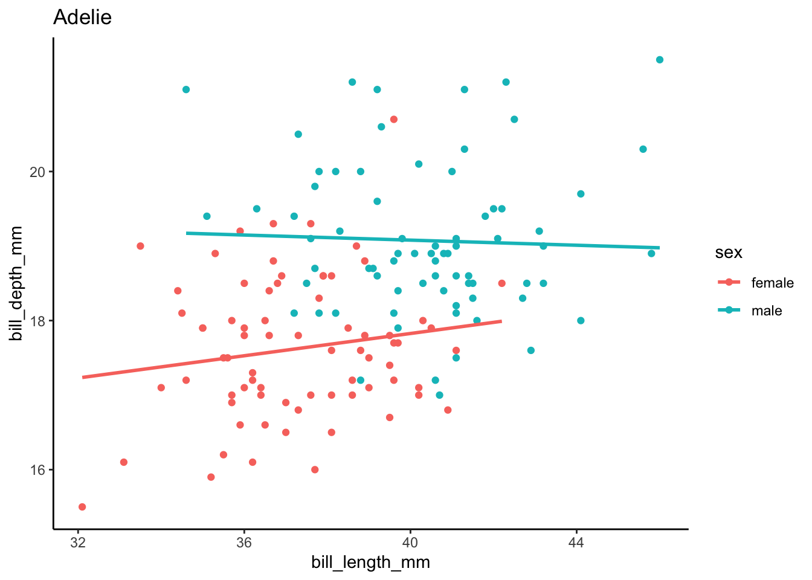
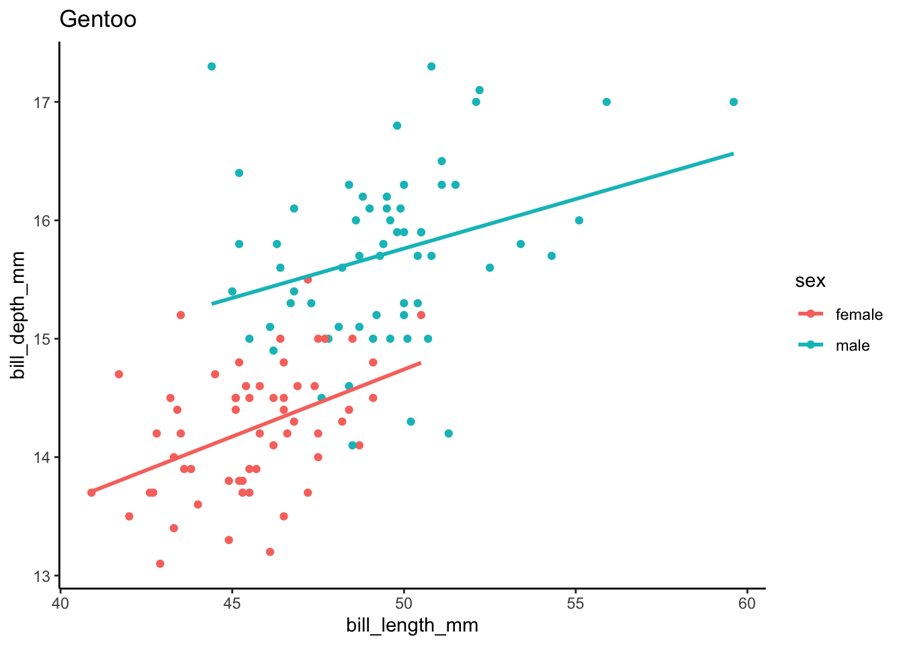
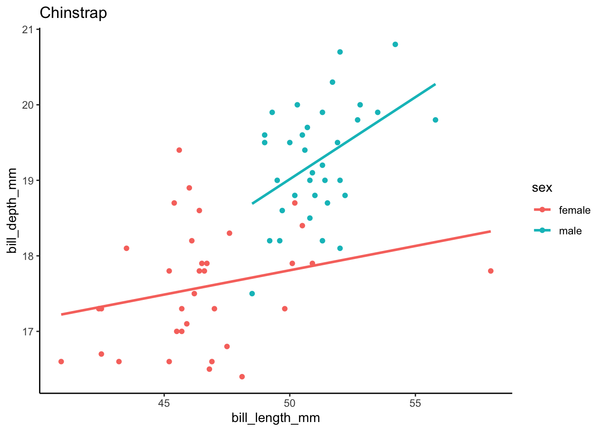
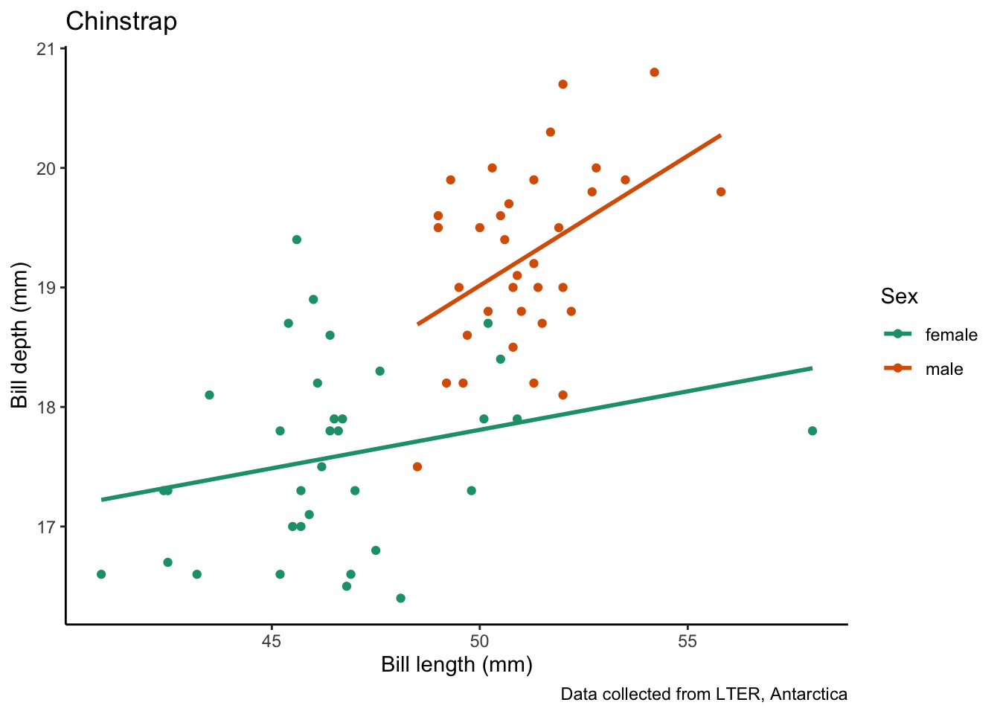
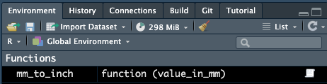
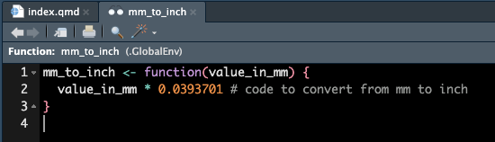
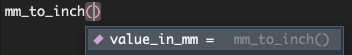

Iterating and writing functions, part I: for loops and functions
Developing tools for doing things over and over
for loops
base R
functions
functional programming
1 Introduction
You might find yourself in a situation where you are copying and pasting your code multiple times, changing a single variable. This could be situation where you want to run a series of statistical tests, each with a different response variable. Or, you want to make a series of plots, adjusting which variables are on the x-axis. This is generally not a good idea, as it is error prone and inefficient.
We are going to spend the next few sections of Code Club talking about things you can do to avoid copy and pasting your code. Today, we are going to talk about:
forloops- writing your own functions
We will start, like we typically do, by loading the packages we will use today.
library(tidyverse) # for wrangling and everything
library(palmerpenguins) # for penguins data
library(glue) # for easy pasting of names2 for loops
2.1 for loops, the basics
For loops iterate over some kind of sequence, performing an action, one element at a time. The basic syntax is like this:
for (item in list_of_items) { # items to iterate over
# code that does something
do_something(item)
}Let’s go through a simple example:
for (some_value in 1:5) {
print(some_value * 2)
}[1] 2
[1] 4
[1] 6
[1] 8
[1] 10What is happening under the hood, is that your for loop is assigning each item in your vector (here, the integer values 1 through 5) to the object some_value, multiplying it by 2, and then printing it. If we want to be very explicit, this is exactly what is happening:
# iteration 1
some_value <- 1
print(some_value * 2)[1] 2# iteration 2
some_value <- 2
print(some_value * 2)[1] 4# iteration 3
some_value <- 3
print(some_value * 2)[1] 6# iteration 4
some_value <- 4
print(some_value * 2)[1] 8# iteration 5
some_value <- 5
print(some_value * 2)[1] 10If we do this again in the loop:
for (some_value in 1:5) {
print(some_value * 2)
}[1] 2
[1] 4
[1] 6
[1] 8
[1] 10And check what some_value is at the end:
some_value[1] 5We can see that the value 5 (last of some_value) is currently assigned. This is not totally intuitive - you mgiht think that some_value would hold all of the values that we set to that object in our loop but this is not true. This is good to remember since this is now lingering in our environment.
I have shown this use-case of a for loop because I think it helps you to see how it works - not because you would actually use it to do this task. Because R is a vectorized language, you don’t actually need a for loop to multiply every value by a number, we can do this task more simply below.
# multiply each element of the vector 1:5 by 2
1:5 * 2[1] 2 4 6 8 10Let’s do another example. I could create a for loop that simply prints something out for me. Here’s an example:
# create a vector of the names of my special flowers
my_special_flowers <- c("dahlias", "roses", "ranunculus")
# use a for loop to print this message for each flower
for (flower in my_special_flowers) {
print(glue("I really like {flower}"))
}I really like dahlias
I really like roses
I really like ranunculusYou can also make this conditional, meaning your for loop does some things under certain conditions, and something else in another condition.
# a vector of solanaceous vegetables
my_vegetables <- c("Tomato", "Potato", "Pepper", "Eggplant")
for (vegetable in my_vegetables) {
# if the vegetable is tomato, print this message
if (vegetable == "Tomato") {
print(glue("{vegetable} is my favorite Solanaceae vegetable"))
}
# if the vegetable is anything else, print this message
else {
print(glue("{vegetable} is a perfectly fine Solanaceae vegetable"))
}
}Tomato is my favorite Solanaceae vegetable
Potato is a perfectly fine Solanaceae vegetable
Pepper is a perfectly fine Solanaceae vegetable
Eggplant is a perfectly fine Solanaceae vegetable2.1.1 for loops basics practice
Write a for loop that takes the vector of numbers -5, -3, 2, 4, 7 and prints their absolute value.
Need a hint?
The function for absolute value is abs().
Need another hint?
First create a vector of your numbers, then iterate over it.
Click for the solution
# create your vector of numbers to iterate over
my_vector <- c(-5, -3, 2, 4, 7)
# use a for loop to do the iterating
for (number in my_vector) {
print(abs(number))
}[1] 5
[1] 3
[1] 2
[1] 4
[1] 72.2 for loops, for plotting
# create a vector that has all the penguin species names
penguin_species <- unique(penguins$species)
for (focal_species in penguin_species) {
# filter your df for each focal_species
one_penguin_species <- penguins |>
filter(species == focal_species) |>
drop_na()
# plot
plot <- one_penguin_species |>
ggplot(aes(x = bill_length_mm, y = bill_depth_mm, color = sex)) +
geom_point() +
geom_smooth(method = "lm", # use a linear model
se = FALSE) + # turn off confidence interval
labs(title = focal_species) + # put the species name as the title
theme_classic()
# print the plot
print(plot)
}`geom_smooth()` using formula = 'y ~ x'
`geom_smooth()` using formula = 'y ~ x'
`geom_smooth()` using formula = 'y ~ x'
Create a new directory (in your working directory) called figs which is where we will store our figures.
# write code to create a directory called "figs" in our working directory
dir.create(path = "figs")Create a series of plots, one for each penguin species, to examine the relationship between bill depth and bill length.
for (focal_species in penguin_species) {
# filter your df for each focal_species
one_penguin_species <- penguins |>
filter(species == focal_species) |>
drop_na()
# plot
plot <- one_penguin_species |>
ggplot(aes(x = bill_length_mm, y = bill_depth_mm, color = sex)) +
geom_point() +
geom_smooth(method = "lm", # use a linear model
se = FALSE) + # turn off confidence interval
scale_color_brewer(palette = "Dark2") +
labs(title = focal_species, # put the species name as the title
x = "Bill length (mm)",
y = "Bill depth (mm)",
color = "Sex",
caption = "Data collected from LTER, Antarctica") +
theme_classic()
# print the plot
print(plot)
}`geom_smooth()` using formula = 'y ~ x'
`geom_smooth()` using formula = 'y ~ x'
`geom_smooth()` using formula = 'y ~ x'
for (focal_species in penguin_species) {
# filter your df for each focal_species
one_penguin_species <- penguins |>
filter(species == focal_species) |>
drop_na()
# plot
plot <- one_penguin_species |>
ggplot(aes(x = bill_length_mm, y = bill_depth_mm, color = sex)) +
geom_point() +
geom_smooth(method = "lm", # use a linear model
se = FALSE) + # turn off confidence interval
scale_color_brewer(palette = "Dark2") +
labs(title = focal_species, # put the species name as the title
x = "Bill length (mm)",
y = "Bill depth (mm)",
color = "Sex",
caption = "Data collected from LTER, Antarctica") +
theme_classic()
# save the plots
filename <- glue("figs/{focal_species}_bill-dimensions.png") # create filename
ggsave(filename, plot) # save the plot to file
}Saving 7 x 5 in image
`geom_smooth()` using formula = 'y ~ x'
Saving 7 x 5 in image
`geom_smooth()` using formula = 'y ~ x'
Saving 7 x 5 in image
`geom_smooth()` using formula = 'y ~ x'2.2.1 for loops, for plotting practice
Question
Need a hint?
Hint 1
Need another hint?
Hint 2
Click for the solution
3 Writing functions
There are many functions that exist in R, both built into the base functionality, and addition ones we can access by loading different packages. We have talked about functions before in Code Club, and you may be using them without explicitly realizing they are functions. For example, mean() is a function that calculates the mean of an object (usually a vector).
There are some functions which are by default available when you load R (like mean()), and others that exist within packages that require you to load those packages (e.g., tidyverse) before they can be used (e.g., ggplot()).
But, there may be situations where we want to do something in R, and a function does not exist to do this task. This could be because the operation you want to do is so specific to you that no other person could have possibly wanted to do that, or simply that no one has gotten around to writing a built in function yet. This is where writing your own functions can be very useful.
3.1 General syntax
The general syntax of a function is like this:
name_of_function <- function(arguments) {
insert_code_here()
}You can pass multiple arguments to a function, but we are going to start simply with a function that takes one argument.
3.2 Functions with one argument
Here, I am writing a little function to do something simple, like calculate from millimeters to inches.
mm_to_inch <- function(value_in_mm) {
value_in_mm * 0.0393701 # code to convert from mm to inch
}Here, we would call value_in_mm our argument or parameter. Remember that this is a user-defined term, you could call this x, i, or really whatever you want. I like giving the arguments easy-to-read and easy-to-remember names.
Now that we’ve made a function, we can see it in our environment under the “Functions” header.
 If we click on this item, we can see the details of the function.

If we start typing our function, and put our cursor between the parentheses and press tab, we can also see some information about our function.

We can now pass arguments to our new function, here we will try passing 100 mm and see what that would be in inches.
mm_to_inch(value_in_mm = 100)[1] 3.93701Because our function only takes one argument, we can be less explicit and remove value_in_mm and get the same result.
mm_to_inch(100)[1] 3.93701We also might want to pass a whole column or vector to our function, which we can also do.
mm_to_inch(penguins$bill_length_mm) [1] 1.539371 1.555119 1.586615 NA 1.444883 1.547245 1.531497 1.543308
[9] 1.342520 1.653544 1.488190 1.488190 1.618111 1.519686 1.362205 1.440946
[17] 1.523623 1.673229 1.354331 1.811025 1.488190 1.484253 1.413387 1.503938
[25] 1.527560 1.389765 1.598426 1.594489 1.492127 1.594489 1.555119 1.464568
[33] 1.555119 1.610237 1.433072 1.543308 1.527560 1.661418 1.480316 1.566930
[41] 1.437009 1.606300 1.417324 1.736221 1.456694 1.559056 1.618111 1.476379
[49] 1.417324 1.665355 1.559056 1.578741 1.377953 1.653544 1.358268 1.629922
[57] 1.535434 1.598426 1.437009 1.480316 1.405513 1.625985 1.480316 1.618111
[65] 1.433072 1.637796 1.397639 1.618111 1.413387 1.645670 1.318898 1.562993
[73] 1.559056 1.803151 1.397639 1.685040 1.610237 1.464568 1.425198 1.657481
[81] 1.362205 1.688977 1.444883 1.381891 1.468505 1.625985 1.429135 1.452757
[89] 1.507875 1.531497 1.405513 1.618111 1.338583 1.559056 1.425198 1.606300
[97] 1.500001 1.586615 1.303150 1.700788 1.377953 1.614174 1.484253 1.488190
[105] 1.492127 1.562993 1.519686 1.503938 1.500001 1.700788 1.500001 1.795277
[113] 1.562993 1.661418 1.559056 1.681103 1.519686 1.468505 1.405513 1.618111
[121] 1.425198 1.484253 1.582678 1.629922 1.385828 1.598426 1.527560 1.633859
[129] 1.535434 1.736221 1.515749 1.696851 1.448820 1.476379 1.500001 1.618111
[137] 1.401576 1.582678 1.456694 1.562993 1.582678 1.598426 1.263780 1.602363
[145] 1.468505 1.535434 1.543308 1.440946 1.417324 1.488190 1.417324 1.633859
[153] 1.814962 1.968505 1.917324 1.968505 1.874017 1.830710 1.787403 1.838584
[161] 1.704725 1.842521 1.610237 1.929135 1.791340 1.905513 1.803151 1.940946
[169] 1.653544 1.937009 1.818899 1.917324 1.976379 1.775592 1.830710 1.822836
[177] 1.688977 1.814962 1.751969 1.881891 1.897639 1.968505 1.862206 1.685040
[185] 1.775592 2.346458 1.933072 1.905513 1.677166 1.748032 1.732284 1.917324
[193] 1.681103 1.952757 1.783466 1.952757 1.988190 1.716536 1.791340 1.988190
[201] 1.767717 1.779529 1.834647 1.909450 1.775592 1.972442 1.830710 1.771654
[209] 1.724410 1.791340 1.700788 1.984253 1.783466 1.818899 1.799214 2.137796
[217] 1.803151 1.960631 1.818899 1.948820 1.712599 1.996064 1.877954 1.826773
[225] 1.897639 1.830710 1.826773 1.913387 1.870080 2.011812 1.779529 1.779529
[233] 1.933072 2.066930 1.866143 1.968505 1.767717 2.000001 1.708662 2.019686
[241] 1.870080 2.051182 1.870080 2.055119 1.791340 1.948820 1.751969 2.000001
[249] 1.944883 1.846458 1.905513 2.011812 1.909450 2.200789 1.858269 1.933072
[257] 1.862206 1.842521 1.641733 2.102363 1.704725 1.893702 1.988190 1.960631
[265] 1.712599 2.027560 1.818899 2.169293 1.751969 1.921261 1.858269 NA
[273] 1.842521 1.984253 1.779529 1.964568 1.830710 1.968505 2.019686 1.787403
[281] 2.074804 1.779529 1.814962 2.019686 1.811025 2.019686 1.834647 2.035434
[289] 1.850395 2.047245 1.807088 1.988190 1.980316 2.283466 1.826773 1.937009
[297] 1.669292 1.909450 1.700788 1.992127 1.838584 2.047245 1.988190 1.948820
[305] 1.826773 2.078741 1.610237 2.133859 1.673229 2.007875 1.956694 1.870080
[313] 1.874017 2.047245 1.846458 2.106300 1.929135 1.818899 2.003938 1.791340
[321] 2.003938 2.000001 1.972442 1.929135 2.027560 1.960631 1.893702 2.023623
[329] 1.799214 1.996064 1.673229 2.055119 1.779529 1.940946 1.976379 1.795277
[337] 2.043308 1.842521 1.799214 2.196852 1.712599 1.952757 2.000001 1.976379Instead of just printing this information, we might want to save it in our dataframe, which we can do by nesting our function within a mutate() function. Remember that mutate() works with the syntax new_column = function(existing_variables). Also remember that by default, new columns are added after the last column (and if you want to also reorder, you can do that with select()).
penguins |>
mutate(bill_length_inch = mm_to_inch(bill_length_mm))# A tibble: 344 × 9
species island bill_length_mm bill_depth_mm flipper_length_mm body_mass_g
<fct> <fct> <dbl> <dbl> <int> <int>
1 Adelie Torgersen 39.1 18.7 181 3750
2 Adelie Torgersen 39.5 17.4 186 3800
3 Adelie Torgersen 40.3 18 195 3250
4 Adelie Torgersen NA NA NA NA
5 Adelie Torgersen 36.7 19.3 193 3450
6 Adelie Torgersen 39.3 20.6 190 3650
7 Adelie Torgersen 38.9 17.8 181 3625
8 Adelie Torgersen 39.2 19.6 195 4675
9 Adelie Torgersen 34.1 18.1 193 3475
10 Adelie Torgersen 42 20.2 190 4250
# ℹ 334 more rows
# ℹ 3 more variables: sex <fct>, year <int>, bill_length_inch <dbl>3.2.1 Embedding built in functions
We can also use other functions inside our function. For example, R does not by default have a function that calculates the coefficient of variation for a variable. We can write that ourselves though so it’s fine.
# calculate the coefficient of variation by
# dividing the standard deviation by the mean
cv <- function(x) {
(sd(x)/mean(x))
}3.3 Functions with two arguments
We can also write functions that take more than one argument. Here is a simple example for calculating BMI, which is weight in kg divided by height in meters squared.
calculate_bmi <- function(weight_kg, height_cm) {
weight_kg/(height_cm/100)^2
}calculate_bmi(weight_kg = 80, height_cm = 180)[1] 24.69136If you provide your arguments in the order they are expected (here, weight_kg and then height_cm), then you don’t need to specify which is which. But, iif you want to give the arguments in a different order you need to be explicit.
# this is wrong
calculate_bmi(180, 80)[1] 281.25# this is better
calculate_bmi(height_cm = 180, weight_kg = 80)[1] 24.691363.3.1 Functions with one argument practice
Write two functions that convert between degrees Fahrenheit and degrees Celsius and test to see if they work.
Need a hint?
°C = (°F - 32) × 5/9 or °F = (°C * 9/5) + 32
Click for the solution
degF_to_degC <- function(deg_F) {
(deg_F - 32) * (5/9)
}
degC_to_degF <- function(deg_C) {
(deg_C * (9/5)) + 32
}degF_to_degC(deg_F = 32)[1] 0degF_to_degC(deg_F = 100)[1] 37.77778degC_to_degF(deg_C = 0)[1] 32degC_to_degF(deg_C = -40)[1] -403.4 Plotting functions
Now that we are a little comfortable with writing functions, we can make ones that are a little more complicated.
We can also write a function to make our plot.
species_bill_plotting <- function(focal_species) {
penguins |>
filter(species == focal_species) |>
drop_na() |>
ggplot(aes(x = bill_length_mm, y = bill_depth_mm, color = sex)) +
geom_point() +
geom_smooth(method = "lm", # use a linear model
se = FALSE) + # turn off confidence interval
scale_color_brewer(palette = "Dark2") +
labs(title = focal_species, # put the species name as the title
x = "Bill length (mm)",
y = "Bill depth (mm)",
color = "Sex",
caption = "Data collected from LTER, Antarctica") +
theme_classic()
}Then, we can pass our argument to the plot, here, the name of the species we want to plot. This is a useful tool for making many plots with the same structure.
species_bill_plotting("Adelie")`geom_smooth()` using formula = 'y ~ x'
We can then pass this function in a for loop with some simpler looking code (because the bulk of it is elsewhere).
for (focal_species in penguin_species) {
# pass each focal species to the species_bill_plotting function
species_bill_plotting(focal_species)
# save the plots
filename <- glue("figs/{focal_species}_bill-dimensions.png") # create filename
ggsave(filename, plot) # save the plot to file
}Saving 7 x 5 in image
`geom_smooth()` using formula = 'y ~ x'
Saving 7 x 5 in image
`geom_smooth()` using formula = 'y ~ x'
Saving 7 x 5 in image
`geom_smooth()` using formula = 'y ~ x'3.4.1 Functions with more arguments practice
Question
Need a hint?
Here is my hint